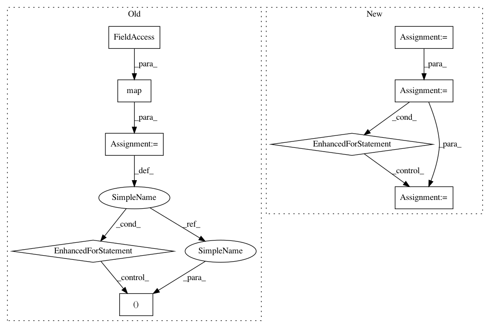

35364f3d1dc129e68d8f5da1cf1d090073e4b556,unittests.py,TestGeomstatsMethods,test_rigid_transformations_group_exp_log,#TestGeomstatsMethods#,124
Before Change
np.array([6 * 1e-8, 5.5 * 1e-7, -2 * 1e-6]))
xs = [x1, x2, x3, x4]
rs = map(rotations.regularize_rotation_vector, [r1, r2, r3, r4])
for (x, r) in zip(xs, rs):
(u, a) = rigid_transformations.group_log(x, r)
(x_result, r_result) = rigid_transformations.group_exp(u, a)
(x_expected, r_expected) = (x, r)
self.assertTrue(np.allclose(x_result, x_expected))
self.assertTrue(np.allclose(r_result, r_expected))
def test_rotations_riemannian_exp_log(self):
r_ref = rotations.regularize_rotation_vector(np.array([-1, 3, 6]))
r1 = np.pi / (3 * np.sqrt(2)) * np.array([0, 0, 0])
r2 = np.pi / (2 * np.sqrt(3)) * np.array([1, 0, 0])
After Change
translation_2 = np.array([4, 0, 0])
rot_vec_2 = np.pi / (2 * np.sqrt(3)) * np.array([1, 0, 0])
transfo_2 = np.concatenate([rot_vec_2, translation_2])
translation_3 = np.array([1.2, -3.6, 50])
rot_vec_3 = np.pi / (2 * np.sqrt(3)) * np.array([1, -20, 50])
transfo_3 = np.concatenate([rot_vec_3, translation_3])
translation_4 = np.array([4, 10, -2])
rot_vec_4 = (np.pi / (2 * np.sqrt(3)) *
np.array([6 * 1e-8, 5.5 * 1e-7, -2 * 1e-6]))
transfo_4 = np.concatenate([rot_vec_4, translation_4])
all_transfos = [transfo_1, transfo_2, transfo_3, transfo_4]
for transfo in all_transfos:
gp_log = rigid_transformations.group_log(transfo)
transfo_result = rigid_transformations.group_exp(gp_log)
transfo_expected = transfo
self.assertTrue(np.allclose(transfo_result, transfo_expected))
def test_rotations_riemannian_exp_log(self):
rot_vec_ref_point = np.array([-1, 3, 6])
rot_vec_1 = np.pi / (3 * np.sqrt(2)) * np.array([0, 0, 0])
In pattern: SUPERPATTERN
Frequency: 3
Non-data size: 9
Instances
Project Name: geomstats/geomstats
Commit Name: 35364f3d1dc129e68d8f5da1cf1d090073e4b556
Time: 2017-10-25
Author: ninamio78@gmail.com
File Name: unittests.py
Class Name: TestGeomstatsMethods
Method Name: test_rigid_transformations_group_exp_log
Project Name: geomstats/geomstats
Commit Name: 35364f3d1dc129e68d8f5da1cf1d090073e4b556
Time: 2017-10-25
Author: ninamio78@gmail.com
File Name: unittests.py
Class Name: TestGeomstatsMethods
Method Name: test_rigid_transformations_riemannian_exp_log
Project Name: etal/cnvkit
Commit Name: 52796475005cb8828c73dfbb97ba9820667c9d41
Time: 2016-08-28
Author: eric.talevich@gmail.com
File Name: cnvlib/coverage.py
Class Name:
Method Name: interval_coverages_pileup
Project Name: geomstats/geomstats
Commit Name: 35364f3d1dc129e68d8f5da1cf1d090073e4b556
Time: 2017-10-25
Author: ninamio78@gmail.com
File Name: unittests.py
Class Name: TestGeomstatsMethods
Method Name: test_rigid_transformations_group_exp_log